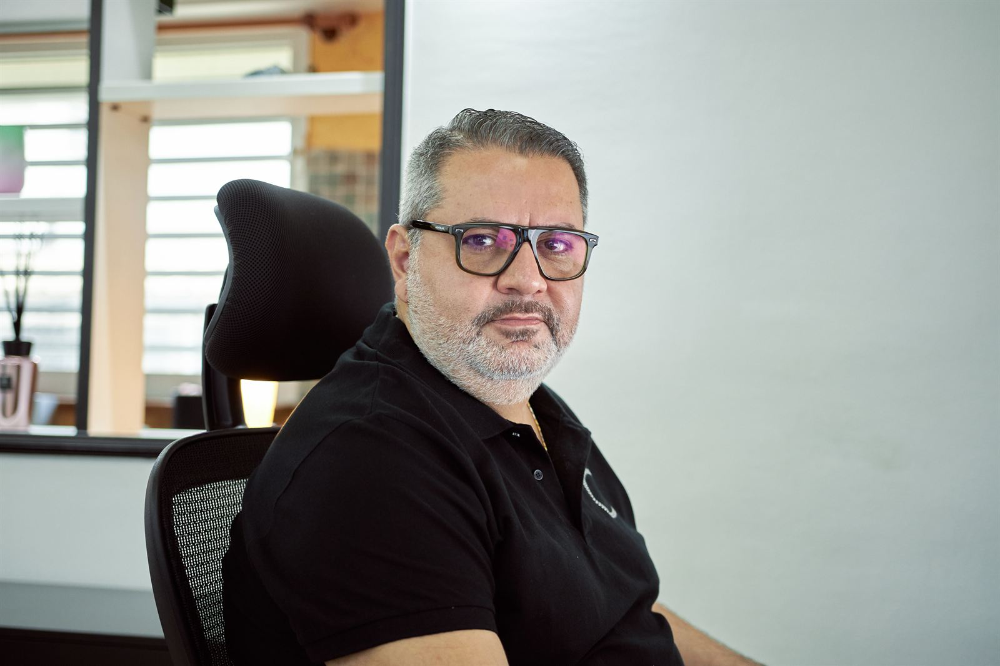

Le Suivi mensuel : votre tableau de bord, lu pour vous chaque mois
Un tableau de bord qu'on n'a pas le temps de lire ne sert à rien. Avant la fin de chaque mois, je lis vos chiffres et je vous dis ce qu'ils veulent dire : où vous en êtes, pourquoi, et quoi faire.
- Chaque mois
- Un vocal, un mail, une page
- Deux ou trois actions en euros

Ce que vous recevez
Avant la fin de chaque mois, sous trois formes : un message vocal à écouter en voiture, un mail, et une page qui se lit sur votre téléphone. Le même contenu, pour que vous le receviez là où vous êtes.
Six réponses en clair
- Ce que vous avez vraiment gagné ce mois-ci.
- Ce que vos décisions du mois dernier vous ont rapporté.
- Jusqu'à quand votre trésorerie vous porte.
- D'où vient l'écart avec ce que vous aviez prévu.
- Les clients qui s'éloignent, avant de les perdre.
- Ce que vous faites ce mois-ci, et ce que ça vous rapporte.
Deux ou trois actions chiffrées en euros
Pas une liste de vingt recommandations : deux ou trois gestes, chacun avec ce qu'il rapporte et sa date. Le mois suivant, je vous dis ce qu'ils ont donné. Voir trois exemples de point du mois, en commerce, en production et en services.
D'où viennent les chiffres
De ce que votre entreprise utilise déjà : votre caisse, votre logiciel de facturation, vos relevés bancaires, vos factures fournisseurs. Vous n'avez rien à ressaisir et aucun logiciel à apprendre.
C'est ce qui permet d'avoir le mois en clair avant la fin du mois suivant, au lieu de l'attendre jusqu'au bilan.
Pourquoi chaque mois
Vous décidez aujourd'hui. Avec le bilan, vous saurez dans sept mois si c'était la bonne décision. Avec le Suivi mensuel, vous le savez en trente jours, et vous avez encore le temps de corriger.
Chez Autoguadeloupe, les chiffres tombaient tous les matins. Une PME n'a pas besoin de ce rythme-là. Une fois par mois, à date fixe, elle a besoin de savoir où elle en est.
Avant de commencer
Le Suivi mensuel s'appuie sur les repères posés dans Le Point de Départ : votre seuil de rentabilité et le budget de l'année. Sans eux, on ne saurait pas à quoi comparer le mois. Il prend toute sa force après Le Plan de marche, quand les objectifs par gamme et les actions de vente sont posés.
C'est l'étape 10 de la méthode ADAM BOARDS™.
Le tarif
Le tarif du Suivi mensuel est publié sur adamboards.fr, le site de la méthode.
Voir le tarif sur adamboards.frQuestions fréquentes
Qu'est-ce qu'un bon tableau de bord pour une TPE ?
Un tableau de bord court, à jour avant la fin du mois, qui répond à ce qu'un dirigeant se demande vraiment : ce qu'il a gagné, jusqu'à quand sa trésorerie le porte, d'où vient l'écart avec le prévu, quels clients s'éloignent, et quoi faire maintenant.
Faut-il changer de logiciel ?
Non. Le suivi part de ce que votre entreprise utilise déjà : votre caisse, votre logiciel de facturation, vos relevés bancaires, vos factures. Vous n'avez rien à ressaisir.
Combien cela coûte-t-il ?
Le tarif du Suivi mensuel est publié sur adamboards.fr, le site de la méthode ADAM BOARDS™.
Trente minutes pour lire vos chiffres
Pour vous, ou pour un dirigeant que vous connaissez. Au bureau à Baie-Mahault, chez vous ou à distance.
- Téléphone0690 55 89 88
- WhatsAppÉcrire un message
- Mailcontact@cador-gp.com